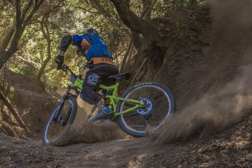
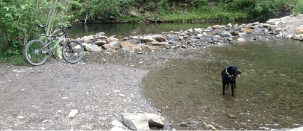

Breathtaking Picnic Ride
Difficulty:Length: 2.5 hours
Cost: $149/person
Location: Drinking Horse Trail
This ride will give you breathtaking views. You’ll see a mountain shaped like a horse drinking from a creek and have a picnic lunch next to the creek. This trail is 2.5 miles round trip and goes up 700 vertical feet.


Scenic Canyon Ride
Difficulty:Length: 1.5 hours
Cost: $99/person, $15/dog
Location: Sourdough Canyon Trail
Ride along the Sourdough Canyon Trail and enjoy the scenery. Bring your best friend along on this ride. Sourdough Canyon is a "leash off" park.